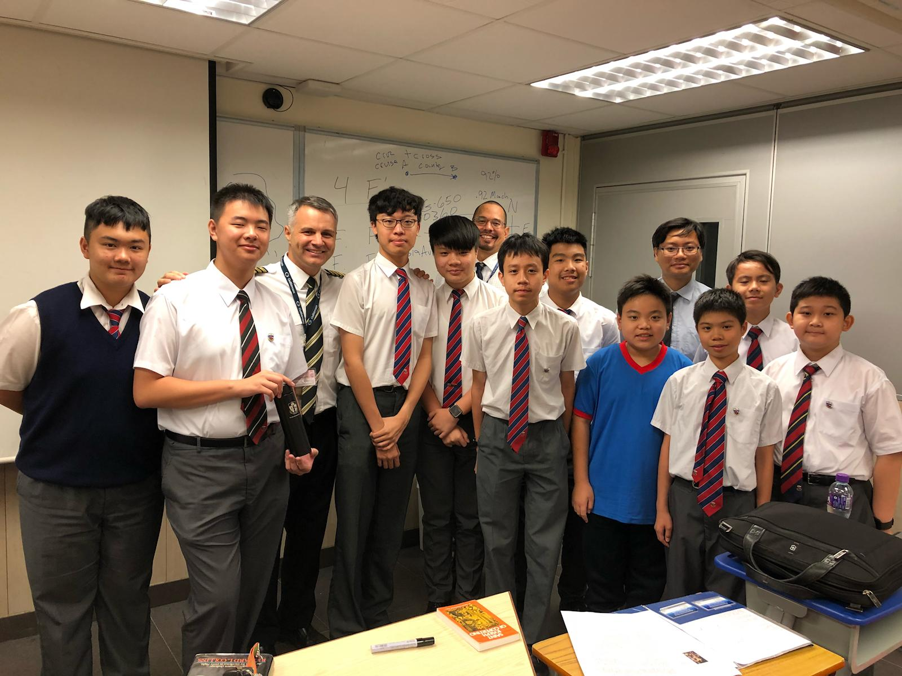
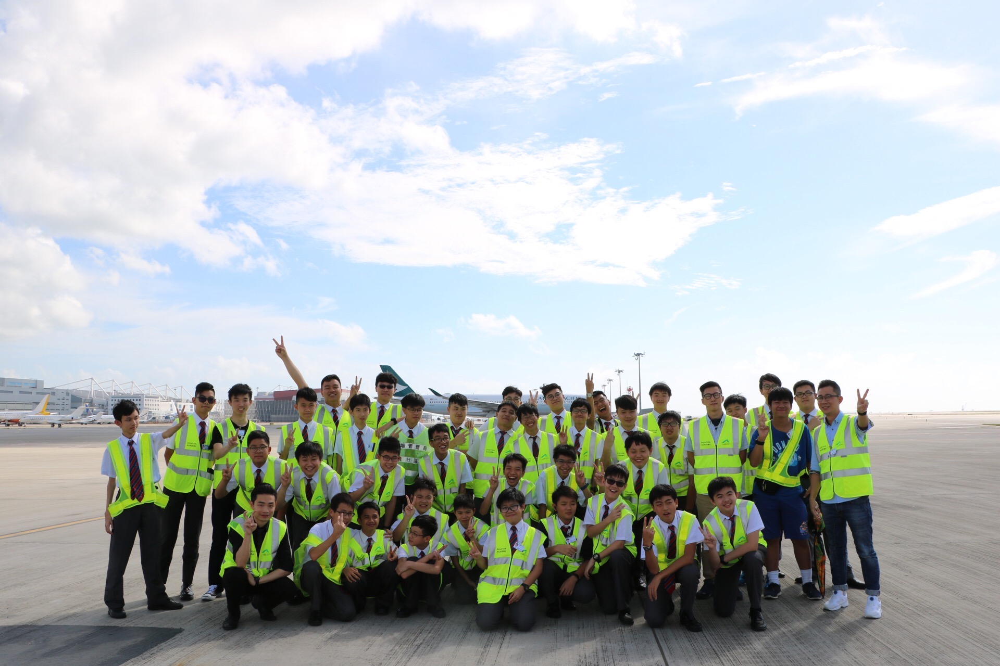
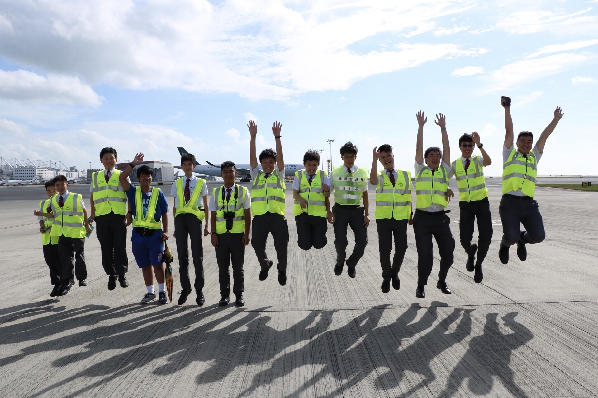

1 / 5

A private pilot have made a talk and share his flying experience!
2 / 5

The day that we went to visit the aviation academy, and learn about procedure how Hong Kong International Airport works!
3 / 5

The co-currculum day!
4 / 5

Group photo of the ramp visiting day!
5 / 5

The ramp visiting. We saw a lot of large airplane taxi besides us!